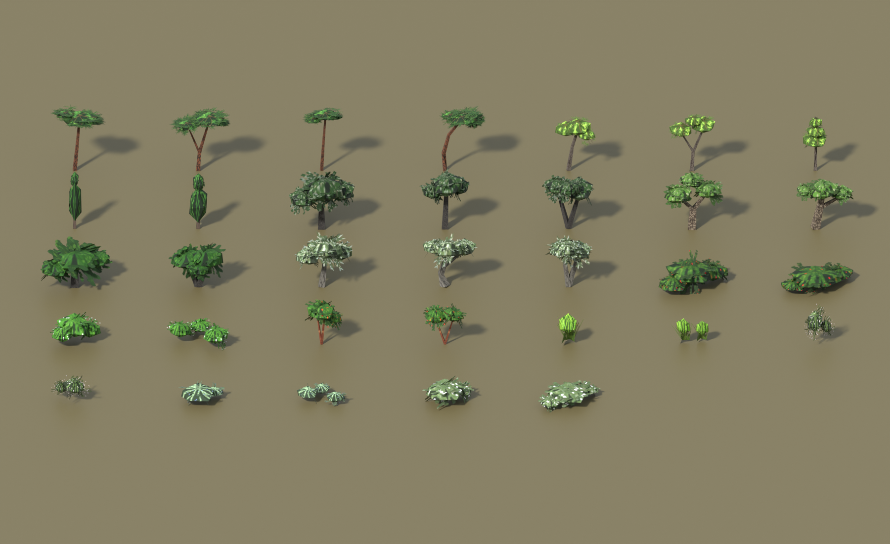
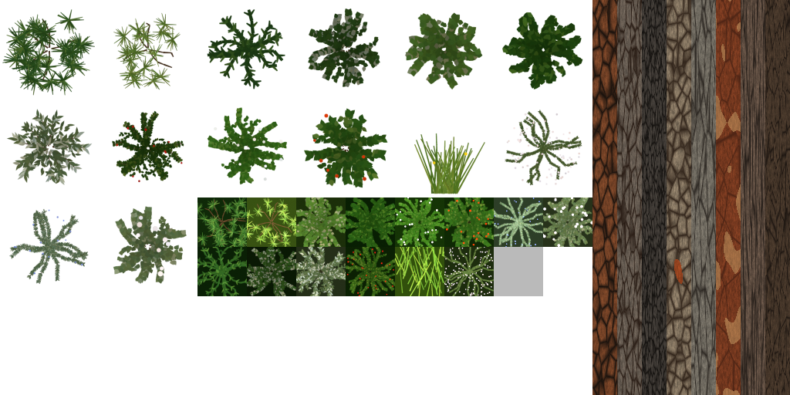

Vegetazione: specie e varietà
Specie mediterranee per gruppo di combustibile: ciò che si vede è ciò che brucia. Ogni pianta ha un corpo della chioma, carte di foglie ritagliate dall’atlante e la corteccia sul tronco; lo scheletro dei rametti e i detriti compaiono quando brucia (shader del gioco).


Pino domestico conifere (classi 10-12)
- pine_1: Pino domestico: tronco inclinato e ombrello a tre cuscini.
- pine_2: Pino domestico gemello: due fusti dalla stessa base.
- pine_3: Pino domestico slanciato: fusto alto e ombrello stretto.
- pine_4: Pino domestico piegato dal vento: chioma sottovento.
Pino d'Aleppo e marittimo conifere
- aleppo_1: Pino d'Aleppo: fusto inclinato e chioma irregolare a ciuffi.
- aleppo_2: Pino d'Aleppo biforcato: due cime aperte.
- aleppo_3: Pino marittimo giovane: chioma conica e rada.
Cipresso conifere
- cypress_1: Cipresso: colonna stretta e scura.
- cypress_2: Cipresso a fiamma larga: rami aperti in basso.
Leccio latifoglie (classi 4-6)
- holm_1: Leccio: tronco tozzo e chioma densa e tonda.
- holm_2: Leccio alto: tronco lungo e chioma raccolta.
- holm_3: Leccio a ceppaia: tre polloni sotto una chioma larga.
Sughera latifoglie
- cork_1: Sughera: tronco grosso, chioma aperta su rami larghi.
- cork_2: Sughera inclinata: un grosso ramo laterale.
Carrubo latifoglie
- carob_1: Carrubo: cupola larga e bassa, verde scuro lucido.
- carob_2: Carrubo a due fusti: chioma asimmetrica.
Ulivo latifoglie, e alberi isolati nei prati
- olive_1: Ulivo: tronco nodoso e tre cime argentate.
- olive_2: Ulivo contorto: tronco a S con un grosso ramo laterale.
- olive_3: Ulivo vecchio a due fusti.
Lentisco macchia (classi 7-9)
- lentisk_1: Lentisco: cuscino largo e denso, verde scuro.
- lentisk_2: Lentisco basso: tappeto a quattro lobi.
Mirto macchia
- myrtle_1: Mirto: mazzo compatto e tondo, verde vivo.
- myrtle_2: Mirto rado: tre ciuffi staccati.
Corbezzolo macchia alta
- arbutus_1: Corbezzolo: alberello a più fusti, chioma tonda.
- arbutus_2: Corbezzolo largo: due cime sopra i polloni.
Ginestra macchia e gariga
- broom_1: Ginestra: ciuffo di verghe diritte, fiori gialli.
- broom_2: Ginestra doppia: due ciuffi accostati.
Erica arborea macchia
- heather_1: Erica arborea: fusti diritti e fitti, chioma fine.
- heather_2: Erica bassa: cespuglio largo.
Rosmarino gariga
- rosemary_1: Rosmarino: cuscino basso grigio-verde.
- rosemary_2: Rosmarino sparso: tre cuscini.
Cisto gariga
- cistus_1: Cisto: cupola bassa grigio-verde, fiori bianchi e rosa.
- cistus_2: Cisto largo: tappeto a tre lobi.
Generato da scripts/build_vegetation_models.py (Blender). Riferimenti fotografici e licenze: assets/models/CREDITS.txt.